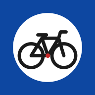

Sentieri Umbria
Questa è la vecchia app
Disinstallala (tieni premuta l'icona → Disinstalla), poi apri qui sotto l'app che ti serve e installala
dal menu ⋮ di Chrome. Finché la vecchia resta sul telefono, Chrome dice «già installata».
Scegli l'app: ognuna si installa sul telefono per conto suo.
A piediSentieri CAI con bussola di guida e avviso fuori sentiero

In biciCiclovie e percorsi MTB, con vibrazione e suono fuori percorso
Per installarla: apri l'app, poi menu ⋮ di Chrome → «Installa app».